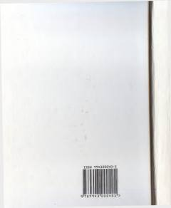

TKCharm va mo'yna ishlab chiqarish jarayonlari kimyosi va texnologiyasiga bag'ishlangan o'quv darslik.
Ushbu o'quv darsligida terining tuzilishi, charm va mo'yna xom ashyolari hamda ularning xossalari batafsil bayon etilgan. Shuningdek, charm va mo'yna ishlab chiqarishning tayyorlov, oshlash va pardozlash jarayonlari kimyosi va texnologiyasining nazariy asoslari hamda amaliy bajarilishi yoritilgan.